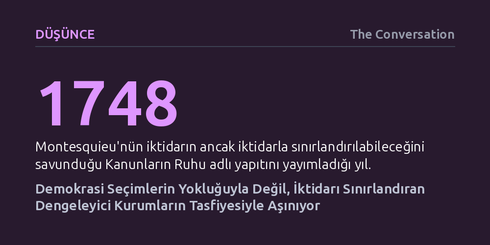

DUSUNCE · The Conversation · 2026-10-21
Çağdaş demokrasilerin gerilemesi sandıkların kalkmasıyla değil; yargı, üniversite ve sendika gibi denetleyici ara kurumların içinin boşaltılmasıyla gerçekleşiyor. Montesquieu'nün belirttiği üzere, iktidar ile yurttaş arasındaki tampon yapılar çöktüğünde geriye yalnızca keyfi yönetim ve isyan kalıyor.
Demokrasinin asıl güvencesinin yalnızca seçimler değil; yargıdan sendikalara ve üniversitelere uzanan özerk ara kurumların iktidarı dengeleme ve yavaşlatma kapasitesi olduğunu gösterir.

Günümüzde demokrasilerin gerilemesi artık tankların sokaklara indiği ya da meclislerin kapatıldığı ani askeri darbelerle gerçekleşmiyor. Seçim sandıkları kurulmaya devam ediyor, parlamentolar toplanıyor ve mahkemeler biçimsel varlığını koruyor. Ancak yüzeydeki bu alışıldık işleyişin altında çok daha sinsi bir dönüşüm yaşanıyor: Siyasi iktidarın kararlarını sorgulayabilecek, denetleyebilecek ve gerektiğinde sınırlayabilecek kurumlar adım adım etkisizleştiriliyor.
Siyaset bilimcilerin "demokratik gerileme" olarak tanımladığı bu süreçte rejimler bir gecede açık bir otokrasiye evrilmiyor. Bunun yerine iktidar; yargı bağımsızlığını aşındırarak, meclis denetimini işlevsizleştirerek, idari kadroları tekeline alarak ve eleştirel medyayı baskılayarak kurumları hizaya sokuyor. Kurumlar varlığını kâğıt üzerinde sürdürse de özerkliklerini yitiriyor, kendi kendilerini sansürlemeye başlıyor ve nihayetinde iktidarın keyfiyetini dizginleyen birer fren mekanizması olma niteliğini kaybediyor.
Bugün dünyanın dört bir yanında gözlenen bu kurumsal çözülmeyi anlamak için 18. yüzyıl düşünürü Montesquieu'nün sezgilerine dönmek gerekir. Montesquieu günümüz anlamıyla bir demokrat değildi; genel oy hakkını veya imtiyazların bütünüyle kaldırılmasını savunmuyordu. Ancak 1748 tarihli Kanunların Ruhu adlı yapıtında geliştirdiği siyasal ılımlılık kuramı, gücün doğasına dair evrensel bir gözleme dayanıyordu: Gücü elinde tutan her insan, sınırlarla karşılaşmadığı sürece onu kötüye kullanma eğilimindedir.
Fransız düşünüre göre bu yozlaşmayı engellemenin yolu ahlak çağrılarından değil, kurumsal karşı ağırlıklardan geçer. Montesquieu'nün monarşi çözümlemesinde en kritik işlevi hükümdar ile tebaa arasında konumlanan "ara iktidarlar" üstlenir. Yargı organları, yerel meclisler, bağımsız kentler ve meslek birlikleri, iktidarın tebaaya aracısız ve mutlak bir biçimde dayatılmasını engeller. Çünkü yazarın temel tezinde vurguladığı üzere, "iktidarın kötüye kullanılmasını önlemek için, iktidarın iktidarla sınırlandırılması gerekir." Bu ara direnç odakları bulunmadığında rejim hızla keyfi bir despotizme sürüklenir.
Montesquieu'nün düşüncesini 19. yüzyılda sürdüren Tocqueville de benzer bir uyarıda bulunmuştu. Eşitlik koşullarının geçerli olduğu demokratik çağlarda, çoğunluğun tiranlığına karşı bireysel özgürlükleri korumanın tek yolu güçlü sivil ve siyasal örgütlenmelerdir. Eski rejimin zümre temelli ara yapılarının yerini modern demokrasilerde özerk dernekler, meslek odaları ve özgür basın almıştır.
Çağdaş dünyada ara kurumlar denildiğinde akla bağımsız mahkemeler, özerk üniversiteler, sendikalar, yerel yönetimler, çevre örgütleri ve araştırmacı gazetecilik gelir. Bu yapıların varlığı siyasal karar alma süreçlerini zorlaştırır, yürütmenin hızını keser ve onu uzlaşma aramaya mecbur bırakır. Ancak siyasi liderlerin çoğu zaman birer ayak bağı ya da bürokratik engel olarak gördüğü bu yavaşlama, demokrasinin bir zaafı değil; tersine sistemin istikrarını sağlayan en temel emniyet supabıdır.
Kararların müzakere edilmeden ve kurumsal süzgeçten geçirilmeden tek merkezden dayatıldığı rejimlerde güç kişiselleşir. Buna karşılık denetleyen bir parlamento, anayasal uygunluğu gözeten bir yargı, gerçeği soruşturan bir medya ve itiraz eden bir sivil toplum, iktidarı hem uyarır hem de dengeler. Montesquieu'nün monarşiye sunduğu aydınlanmış çıkar mantığı modern yönetimler için de geçerlidir: Kendi gücünü sınırsızca genişleten bir iktidar, aslında kendi meşruiyetini ve güvenliğini aşındırır.
Ara yapılar aynı zamanda toplumsal öfkeyi soğuran ve dönüştüren birer dalgakıran görevi görür. Yurttaşlar taleplerini ve şikâyetlerini sendikalar, sivil toplum kuruluşları veya yerel yönetimler aracılığıyla kamusal alana taşıyabildiklerinde anlaşmazlıklar uzlaşmayla çözülebilir. Bu kurumlar zayıflatıldığında ise toplumla siyaset arasındaki bütün yastıklar ortadan kalkar.
Montesquieu iktidarın akışını düzenleyen ara mekanizmaları bir nehir yatağındaki kanallara ve su bentlerine benzetir. Kanallar akıntıyı yavaşlatır, dağıtır ve yıkıcı taşkınları önler. Demokratik gerileme de tam olarak bu kanalların tıkanması ve bentlerin çökmesiyle başlar. Yürütme gücü aradaki tüm denetim odaklarını etkisizleştirdiğinde, geriye yalnızca yalnızlaşmış yurttaşlarla karşı karşıya kalan çıplak bir devlet kudreti kalır.
Fransa'nın siyasal tarihi bu tablonun somut bir örneğidir. Üçüncü Cumhuriyet'in 1901 tarihli yasayla dernek kurma hakkını önceden izin alma şartına bağlamaksızın tanıması, toplumsal nefes borularını açmıştı. Buna karşılık Napoléon imparatorlukları ve Vichy rejimi gibi otoriter yönetimler, ilk iş olarak bu ara yapıları dağıtarak toplumu savunmasız bırakmayı seçmiştir.
Dengeleyici kurumlar tasfiye edildiğinde iktidarın keyfiyeti kuralsızlaşır. Kurumsal olarak frenlenemeyen, kamusal alanda müzakere imkânı bulamayan bir iktidar karşısında yurttaşların elinde başvurabilecekleri tek bir yol kalır: Sokak patlamaları ve isyan. Dolayısıyla ara kurumları hırpalamak yürütmeyi güçlendirmez; rejimi doğrudan toplumsal patlamaların hedefi haline getirir.